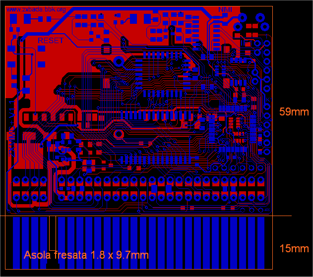
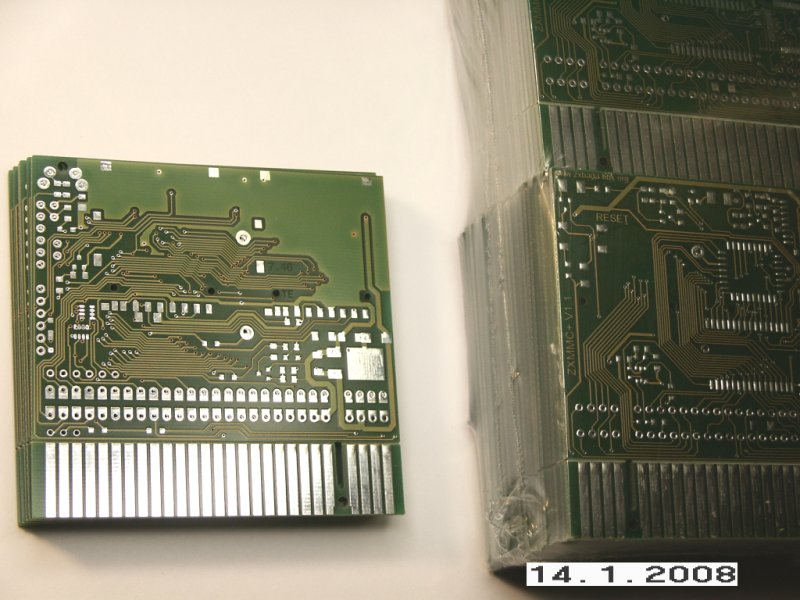

The ZXMMC+ PCB Page
The PCB has been designed in such a way that the Pass-Through edge connector is printed as part of the main PCB. Thanks to a "pre-cut" line, it's easy to split it in two parts then solder the edge male connector's pcb over the main pcb. For this purpose, square pads are provided on the back side of main pcb.
NOTE: some tracks look strange in this screenshot: this is due to resolution. All turns are 45 degrees.


This picture shows the new 1.1 version
Home Technical Description Hardware Details Software QuickStart Schematic Contact the Author